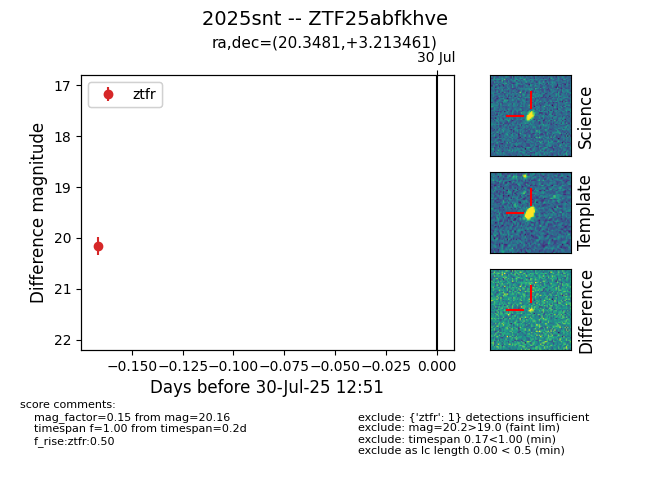

Target 2025snt at 2025-07-30 12:51, see:
FINK: fink-portal.org/2025snt
Lasair: lasair-ztf.lsst.ac.uk/objects/2025snt
ALeRCE: alerce.online/object/2025snt
TNS: wis-tns.org/object/2025snt
YSE: ziggy.ucolick.org/yse/transient_detail/2025snt
alt names
ZTF25abfkhve (ztf,fink)
2025snt (tns,yse)
coordinates:
equatorial (ra, dec) = (20.3481,+3.21346)
galactic (l, b) = (137.4841,-58.80937)
photometry
last ztfr=20.16
1 ztfr detections
